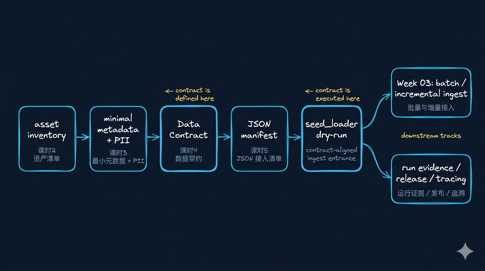
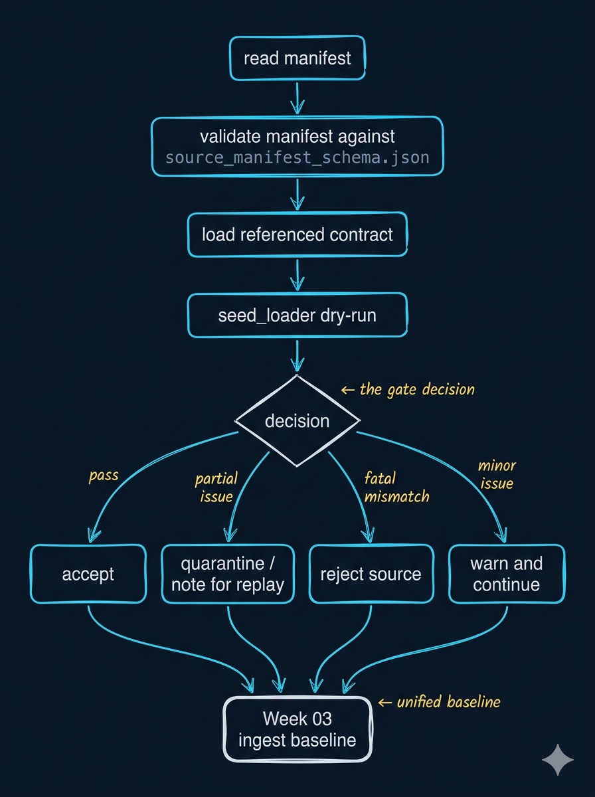
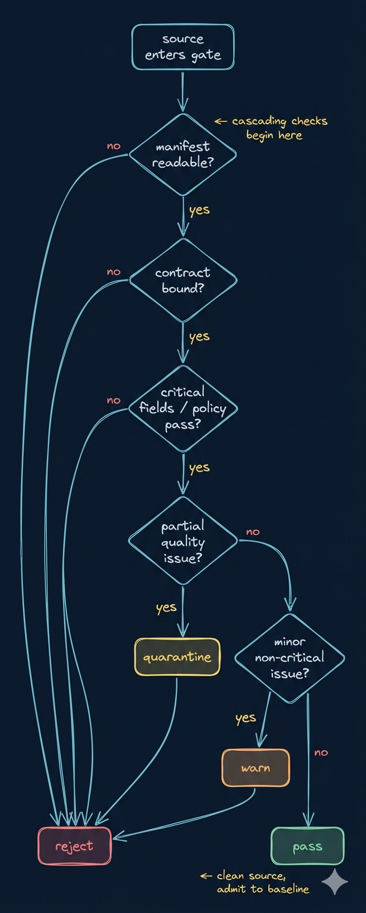

契约驱动的采集策略：Manifest、增量窗口、拦截与 Week03 起跑线
开场判断：Week02 的真正收官，不是写完 contract，而是让 contract 开始驱动 ingest admission
先立一个判断
Data Contract 定义“什么记录算合格”，但它还不是 ingest plan。Manifest、loader、gate 和 run evidence 这一整条链，才是 Week02 交给 Week03 的真正起跑线。
先立住前两句判断
Contract 不是 ingest plan，它只定义对象资格。
Manifest 不是文件清单，而是一次运行的意图声明。
再立住后两句判断
采集模式不是术语表，而是在声明这一批和上一批到底是什么关系。
成熟 gate 不是 pass / fail，而至少要能区分 accept / quarantine / reject / warn。
这讲在 Week02 的位置：前四课的规则，在这里第一次进入运行时
Week02 位置图
课时2 asset inventory
→
课时3 metadata + PII
→
课时4 Data Contract
→
课时5 Manifest + Gate + Run Evidence
→
Week03 batch / incremental / replay / backfill
前四课回答的是“值不值得接、最低带什么、什么才算合格”；这一讲回答的是“这一次到底接哪一批、按什么方式接、失败后怎么处理、结果记到哪里”。
先看总图：Week02 的价值，是把规则连成一条准入链
从 contract 到 ingest baseline

Week02 的收官不是把规则写出来，而是把规则连成 contract -> manifest -> loader / gate -> run evidence -> Week03 ingest baseline 这一条运行链。
先把 4 个对象彻底分开：它们不是同一层东西
| 对象 | 它真正回答什么问题 | 常见误解 | 关键边界 |
|---|---|---|---|
asset inventory |
我们到底准备接哪些输入资产 | 资源目录 | 它决定谁有资格进入候选名单 |
data contract |
一条记录满足什么才算合格 | 更正式的 schema | 它决定放行、隔离、拒收、报警 |
source manifest |
这一次到底接哪一批 source、按什么方式接 | 路径列表 / 文件清单 | 它是一次运行的意图声明 |
run evidence |
这次 dry-run / loader 到底发生了什么 | 日志附属品 | 它是 Week03 state / replay / rollback 的起点 |
这 4 个对象可以用 4 句更口语化的话讲出来
世界地图。
合格标准。
本次装车单。
通关记录。
为什么 manifest 不是文件清单
- 只能列路径
- 不能表达窗口
- 不能绑定 contract
- 不能声明 replay / backfill 语义
- 运行之后也很难沉淀证据
为什么 manifest 是运行时意图
- 能声明 source 身份
- 能声明 load mode
- 能声明窗口与边界
- 能绑定 contract / policy / release
- 能自然进入 loader、gate、run evidence
Manifest anatomy：先讲“谁”和“去哪里读”
| 字段组 | 它守的门 | 典型字段 | 关键边界 |
|---|---|---|---|
| source identity | 这批数据到底是谁 | source_id, asset_type, owner |
没有 source identity，系统无法路由到正确 contract |
| location | 系统去哪里读它 | path, uri, bucket, prefix |
没有 location，loader 只能依赖硬编码 |
| contract binding | 它应该服从哪份 gate | contract_ref |
没有 binding，就没有统一 admission |
Manifest anatomy：再讲“怎么接”和“以后怎么追”
| 字段组 | 它守的门 | 典型字段 | 关键边界 |
|---|---|---|---|
| load semantics | 这次到底怎么接 | load_mode, cursor_field, window_start, window_end, snapshot_date |
这是在声明与上一批的关系 |
| policy context | 运行时边界和版本 | pii_level, access_scope, release_id |
表示谁负责、风险几级、归属哪个 release |
| evidence context | 以后怎么追 | generated_at, manifest_version, notes |
run evidence、复盘、rollback 都要靠它 |
结构化 source：一份最小练习版 JSON manifest 应该怎么讲
{
"manifest_version": "v1",
"release_id": "week02-core-r1",
"generated_at": "2026-04-14T09:00:00Z",
"sources": [
{
"source_id": "ticket_core_daily",
"asset_type": "ticket",
"path": "data/seed_manifests/manifest_tickets_synthetic_v1.json",
"contract_ref": "contracts/data/ticket_contract.json",
"load_mode": "incremental_cursor",
"cursor_field": "updated_at",
"window_start": "2026-04-13T00:00:00Z",
"window_end": "2026-04-14T00:00:00Z",
"owner": "support-ops",
"pii_level": "restricted"
}
]
}source_id / asset_type决定对象身份contract_ref决定准入规则load_mode / window / owner / pii_level / release_id一起声明这批的关系、责任和边界
文档 source：为什么它看起来更简单，其实风险不小
- 这里的关键不在
path，而在snapshot_date - 它声明的是“某个时点的完整世界”，不是“最近变化部分”
- 文档 source 的风险更偏向版本错配、重复索引和授权边界
先把前 3 种 load mode 讲清
| 模式 | manifest 至少要声明什么 | 它真正对应什么业务语义 | 最常见风险 |
|---|---|---|---|
full_snapshot |
snapshot_date |
某个时点的完整世界 | 成本高、重复索引 |
incremental_cursor |
cursor_field + window_start + window_end |
只接最近变化过的对象 | 漏数、重数、时区错误 |
cdc |
checkpoint_field / cdc_cursor |
关心事件流，不关心静态表截面 | 配置复杂、补数难 |
再把 replay / backfill 和判断问题讲清
| 模式 | manifest 至少要声明什么 | 它真正对应什么业务语义 | 最常见风险 |
|---|---|---|---|
replay |
replay_from_manifest / replay_reason |
重跑旧批次，不是新数据 | 重复写入、版本混淆 |
backfill |
backfill_range / reason |
补历史空洞，不是追实时变化 | 影响范围过大、资源争抢 |
- 这一批和上一批到底是什么关系？
- 这次需要覆盖完整世界，还是只接变化部分？
- 如果失败，后面该 replay、backfill，还是继续追增量？
运行时门禁不是二元判断，而是 4 类动作
四类 gate 动作

先看动作分流。下一页再看每一种动作在什么情况下触发。
四类 gate 动作分别在什么情况下触发
| 动作 | 含义 | 什么时候用 |
|---|---|---|
accept |
记录合格，可以进入下一层 | 字段、元数据、PII、枚举全部通过 |
quarantine |
先隔离，暂不进主链路 | 个别记录坏了，但整批仍有价值 |
reject |
整个 source 不接收 | manifest 严重错误、contract 不匹配、关键字段缺失 |
warn |
暂时放行，但必须记日志 | 非阻断问题，允许继续前进但必须留下证据 |
一个更完整的 gate 决策树
gate 决策树

点击图片可放大。这一页只收两件事：检查是级联的，quarantine / warn / reject 背后不是同一种失败。
一次 dry-run 报告，先看哪两件事
- 哪个 manifest 被读取
release_id有没有出现source_id / owner是否明确- 本次批次边界是否说清了
- 绑定了哪份 contract
- 哪些 source 被
accept - 哪些 source 被
quarantine - 哪些 source 被
reject或warn
一次 dry-run 报告，再看它到底给 Week03 留下了什么
| 你先看什么 | 它说明什么 | 为什么和 Week03 有关系 |
|---|---|---|
| manifest schema 是否通过 | 这次批次声明是不是成立 | state 需要一个合法起点 |
| source 是否绑定正确 contract | source 和准入标准有没有闭环 | admission 以后才能复用 |
| gate judgment 是哪一类 | 运行时门禁是否已经起作用 | replay / backfill / patch 边界从这里长出来 |
有没有 release_id / owner / source_id |
有没有最小 run evidence | 复盘、追责、回滚才有抓手 |
现在切到本地，只验证 4 件事
source_manifest_schema.json能不能作为 manifest 的结构基线- 现有 3 份 manifest 有没有把
source_id / asset_type / contract_ref / load_mode写清 manifest_week02_practice_v1.json有没有补出课程练习版意图seed_loaderdry-run 能不能把 manifest 真正读起来，并留下最小 run evidence
本地先打开这几份文件，不要一上来就跑命令
- 现在不是去秀命令，而是验证规则是否已经进入运行时
- 先看 schema，再看 manifest，最后再跑 loader
- 先让学生跟住“本次批次意图”，不要陷进终端细节
本地演示只走这一条最短路径
把本地动作翻译回运行时准入
| 本地动作 | 方法论含义 |
|---|---|
先看 source_manifest_schema.json |
先立 manifest 结构基线 |
| 对照现有 3 份 manifest | 先确认 source、contract、mode 有没有闭环 |
补 manifest_week02_practice_v1.json |
把课程规则写成一次真实运行意图 |
跑 seed_loader dry-run |
让 Week02 的规则第一次进入运行时 |
| 读 dry-run 输出 | 让 run evidence 成为 Week03 的起点 |
今天真正完成了什么
把 contract 进一步接成了 ingest admission。
Manifest 不是清单，而是声明与上一批关系的运行时对象。
Week02 实验页，以及 Week03 的 batch / incremental ingest 起跑线。
为什么 Week02 只做到这里，不直接把 Week03 也做完
- Week02 的任务是立准入链，不是立完整 ingest runtime
- 到 dry-run 为止，已经足够验证规则是否能进入运行时
- state / watermark / replay / backfill 的运行期细节，留给 Week03 才合理
可信的 ingest baseline。
把 baseline 继续长成 batch / incremental / replay / backfill 的运行系统。
常见误解：最容易听偏的 3 处
- “manifest 就是文件清单”
- “contract 写完了就算 Week02 收官”
- “gate 只要 pass / fail 就够了”
把这 3 个误解收回正确判断
- manifest 是运行时意图声明
- Week02 的收官是把规则接入 admission
- gate 至少要能区分
accept / quarantine / reject / warn - run evidence 是 Week03 state / replay / rollback 的起点
- 停在 dry-run 是刻意保留正确的课程边界
行业新信号：Manifest、Run Evidence 和运行期治理正在变成一套连续能力
大家不再满足于“脚本参数 + 临时说明”，而是希望 manifest 成为可审阅、可复跑、可追责的对象。
成熟系统会显式区分 accept / quarantine / reject / warn，而不是全量成功或全量失败。
这不是单纯日志，而是后续 release、追责、rollback 和审计的连续证据。
接实验页和 Week03：现在该把这条准入链真正走一遍了
收官与衔接
Week02 到这里结束时，学生带走的不是半个 ingest 系统，而是一套可信的 ingest baseline。这个边界是正确的，而且是后续 Week03 能稳定起跑的前提。
本课提醒
Manifest 是一次运行的意图声明。
成熟 gate 至少能区分 accept / quarantine / reject / warn。
Week02 停在 dry-run，是为了把可信 baseline 交给 Week03。